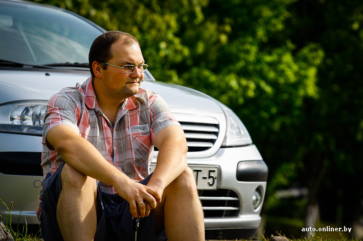

Yury Kuzmich
A lawyer, who has always been a web-developer at heart

This is how Yury Kuzmich was sitting near to his mother's car in Tarasovo
Here's a time line of Yury Kuzmich
- 1985 Born in Orsha, Belarus
- 2008 Graduated from Academy of public administration under the aegis of the President of Republic of Belarus. Started publick service as a police oficer in MIA. Entered BSEU
- 2012 His first sun was born
- 2013 Graduated from BSEU
- 2017 His younger sun was born
- 2020 Left public service with a deream to become web-developer
If you have time, you should see more about this incredible human in his Instagram